This post is about chordal graph and semidefinite programs (SDP), one of the research topic I found very interesting. The purpose of this post is to help people understand the basic concept of chordal graph and how is chordal graph useful in solving semidefinite programs. This post is divided into three main topics:
- What are the fundamental difficulties of solving SDP?
- What is chordal graph and chordal sturcture?
- How to exploit chordal structure in SDP?
Given a standard form semidefinite program (SDP) and its dual 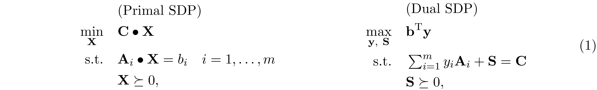 where ${\bf A}_i,\ {\bf C},\ {\bf X},\ {\bf S}\in\mathrm{S^n}$, ${\bf b},\ {\bf y}\in\mathbb R^n$ and ${\bf C}\bullet{\bf X}=\mathrm{Tr}({\bf C}{\bf X})$. The fundamental difficulty of solving SDP is that the variable ${\bf X}$ is generally dense, even in the case when ${\bf C}$ and ${\bf A}_i$'s are sparse. It might seem straightforward to exploit the sparsity pattern in the dual problem, where the slack variable ${\bf S}$ has the (aggregated) sparsity pattern of ${\bf C},\ {\bf A}_1,\ldots ,{\bf A}_m$. Nonetheless, compute the gradient of log-barrier function $\phi({\bf S})=\log\det{{\bf S}}$ requires the inverse of ${\bf S}$, which is generally a dense matrix.
Although SDP can be efficiently solved by interior-point method (IPM) in just a few iterations, however, at each iteration of IPM, we have to solve a normal equation
to evaluate the Newton step $\Delta{\bf y}$. In general, ${\bf H}\in\mathrm{S^m}$ is fully dense; therefore $O(m^3)$ time is required to form ${\bf H}$ and solve $\Delta{\bf y}$, this result in $O(n^6)$ time complexity per-iteration because $n\leq m^2$ and $O(n^{6.5}\log(1/\epsilon))$ time to obtain the $\epsilon$-accuracy solution using IPM.
When the SDP is chordal sparse. That is, the (aggregated) sparsity pattern of ${\bf C},{\bf A}_1,\ldots,{\bf A}_m$ is chordal sparse. We can achieve lower computational complexity to form ${\bf H}$ and solve $\Delta{\bf y}$ at each iteration of IPM. In this blog post, we elaborate a method to exploit chordal structure in SDP proposed by Zhang et al. 1.
Notation: Uppercase (lowercase) bold face letters indicate matrices (column vectors). $A_{ij}$ denotes the $(i,j)$-th element of ${\bf A}$. ${\rm Tr}(\cdot)$ denotes the trace of the matrix. $\mathrm{G(V,E)}$ denotes a graph with vertex set $\mathrm V$ and edge set $\mathrm E\subseteq \mathrm{V\times V}$. $\mathrm{S}^{n}$ is the set of symmetric matrices of order $n$. $\mathrm{S_+^n}$ and $\mathrm{S_{++}^n}$ are the sets of positive semidefinite, positive definite matrices, respectively. $\mathrm{S_E^n}$ is a set of symmetric matrices that have sparsity pattern $\mathrm E$. $\mathrm{S_{E,+}^{n}}$ and $\mathrm{S_{E,++}^{n}}$ are the sets of positive semidefinite and positive definite matrices in $\mathrm{S_E^n}$.
In many applications, we can break the underlying problems into solving a series of sparse normal equations

where ${\bf A}$ is sparse and ${\bf A}\succ 0$. A standard approach to solve ${\bf x}$ is to perform Cholesky factorization on ${\bf A}={\bf L}{\bf L}^\mathrm{T}$, and then solve ${\bf L}{\bf d}={\bf b}$ following by ${\bf L}^\mathrm{T}{\bf x}={\bf d}$. Since ${\bf L}$ is a lower triangular matrix, solving ${\bf L}{\bf d}={\bf b}$ and ${\bf L}^\mathrm{T}{\bf x}={\bf d}$ only requires back substitution, the computational complexity to solve ${\bf x}$ is cubic time if ${\bf L}$ is dense, but achieve linear time if ${\bf L}$ is sparse. In this section, we will show that if ${\bf A}$ has chordal structure, then its sparsity structure remains the same after Cholesky factorization.
To understand chordal structure, one must learn the concept of vertex elimination. Given an undirected graph $\mathrm{G(V,E)}$, the vertex elimination is defined as follow.
- Pick any vertex $v\in\mathrm V$ and remove it from the graph.
- Connect all the neighbors of $v$ together.
- Repeat step 1 and 2 until $\mathrm V=\{\emptyset\}$.
The number of edges introduced during the process of vertex elimination depends on the order of elimination.
Case 1: elimination order $=(v_1\to v_2\to v_3\to v_4\to v_5)$
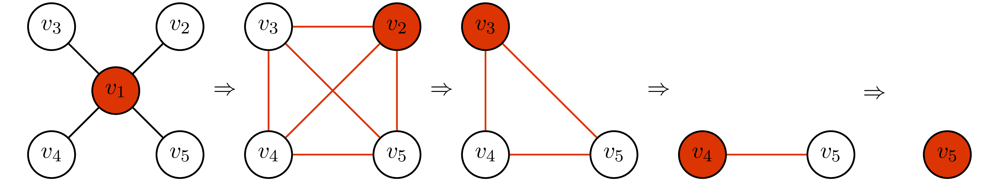Case 2: elimination order $=(v_2\to v_3\to v_4\to v_5\to v_1)$
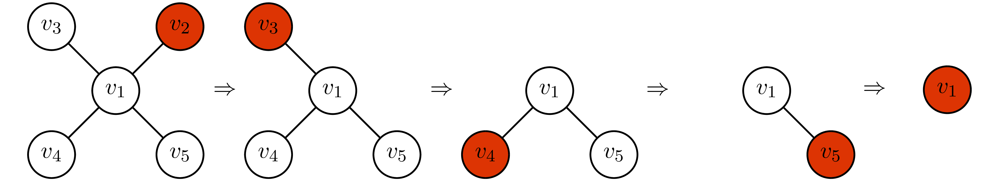In case 1, we add 6 edges during the process of elimination. However, in case 2, we do not have to add any edges. We call the elimination order that does not introduce new edges during the vertex elimination the perfect elimination ordering.
he idea of vertex elimination is tightly related to Cholesky factorization. In fact, if the graphical structure of ${\bf A}$ has the perfect elimination ordering, the Cholesky factor of ${\bf A}$ will have the same structure if rows and columns of ${\bf A}$ are arranged in perfect elimination order. This idea is illustrated as follow.
Case 1: rows and columns of ${\bf A}$ are not in perfect elimination ordering
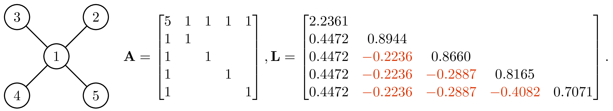Case 2: rows and columns of ${\bf A}$ are in perfect elimination ordering
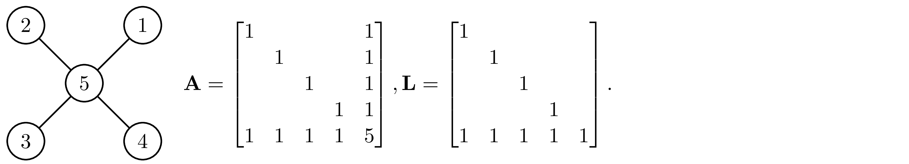The element in matrix that were zeros in ${\bf A}$ but become non-zero in ${\bf L}$ is called fill-in (the elements marked in red in case 1). In case 1, the Cholesky factor has 6 fill-in and become fully dense. However, if we permute the ${\bf A}$ into the perfect elimination order as shown in case 2, the Cholesky factor has no fill-in. Here, we give a conceptual explanation for this result, for more detailed and rigorous proof, see Appendix A. Partition ${\bf A}$ and compute its Schur complement, we have
This expression gives us the first column of Cholesky factor $\sqrt{d_1}\begin{bmatrix}1\\\frac{1}{d_1}{\bf b}_1\end{bmatrix}$. Obviously, the fill-in are cause by the term ${\bf b}_1{\bf b}_1^\mathrm{T}$ in ${\bf D}_1$. Let ${\bf a}_1=\begin{bmatrix}d_1\\{\bf b}_1\end{bmatrix}$ be the first column of ${\bf A}$. Because of the term ${\bf b}_1{\bf b}_1^\mathrm{T}$ in ${\bf D}_1$, if $(1,i)$-th and $(1,j)$-th elements in ${\bf a}_1$ is not zero, $i,j>1$, then the $(i,j)$-th element of ${\bf D}_1$ becomes nonzero. Graphically, it is equivalent to saying that if $(1,i)$, $(1,j)$ are connected, then $(i,j)$ will become connected after eliminating vertex 1, which is exactly the process of vertex elimination. The Cholesky factor can be obtained by performing the similar partition on ${\bf D}_1$ then compute its Schur complement to obtain ${\bf D}_2$, and then repeat this process until we get ${\bf D}_n$ (see Appendix A for details). If rows and columns of ${\bf A}$ are in perfect elimination order, then each ${\bf D}_1,\ldots,{\bf D}_n$ will have no fill-in, it follows that the Cholesky factor of ${\bf A}$ will have no fill-in as well.
In the following, we use the matrix ${\bf A}$ in the case 1 above to illustrate this idea. Partition ${\bf A}$ and compute its Schur complement, we have
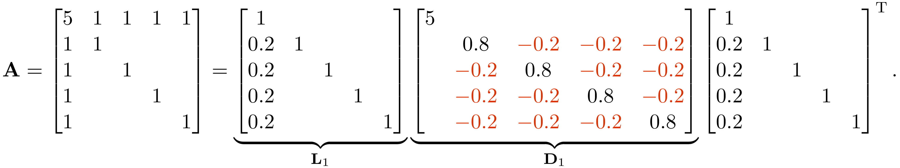Observe that the graphical structure of ${\bf C}_1-\frac{1}{d_1}{\bf b}_1{\bf b}_1^\mathrm{T}$ is the graphical structure of ${\bf A}$ after eliminating vertex $1$.
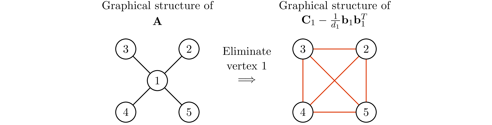Notice that not every graph has perfect elimination ordering, and the perfect elimination ordering (if exists) is not unique in general. Fulkerson et at. 2 showed that graphs that have the perfect elimination ordering are exactly the chordal graphs.
Any chordal graph $\mathrm{G(V,E)}$ can be turn into a tree that has the clique (maximal complete subgraph) of $\mathrm G$ being its vertex. This idea is illustrated in the following example borrowed from 3.
In Example 3, observe that for any $v\in\mathrm V$, every vertex in the clique tree contains $v$ induce a subtree. Therefore, if $v$ is contained in two cliques $W_1$ and $W_2$, then $v$ has to be contained in every cliques that are in the path from $W_1$ to $W_2$ on the clique tree. This is known as induce subtree or running intersection property.
Suppose ${\bf C}, {\bf A}_1,\ldots,{\bf A}_m\in \mathrm{S_E^n}$. 4 5 6 7 proposed to reformulated SDP as

where $\mathrm{P_E(S_+^n)}=\left\{\mathrm{P_E}({\bf X}) \mid {\bf X} \succeq 0\right\}$ is the cone of matrices in $\mathrm{S_E^n}$ that have a positive semidefinite completion.
If we further suppose $\mathrm{G(V,E)}$ is chordal. Let $W_1,\ldots,W_l$ denotes the cliques of $\mathrm G$, and ${\bf X}[W_j,W_j]$ denotes sub-matrices corresponding to clique $W_j$. Grone et al. 7 showed that this problem can be further relaxed into the optimization problem that only enforce the positive semidefiniteness constraint on each ${\bf X}[W_j,W_j]$
By Theorem 2, the relaxation above is always possible, then it follows that the relaxation is tight because ${\bf C}\bullet{\bf X}={\bf C}\bullet \mathrm{P_E({\bf X})}$. For simplicity, let ${\bf X}_j={\bf X}[W_j,W_j]$. For some ${\bf C}_j,{\bf A}_{ij}\in\mathbb R^{|W_j|\times |W_j|}$, we can further rewrite this problem into the optimization problem over ${\bf X}_j$'s.
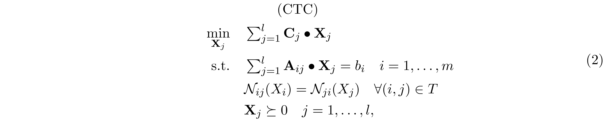where $\mathcal N_{ij}(X_i)$ denotes the part of ${\bf X}_i$ overlaps with ${\bf X}_j$. The reformulation above is called the clique tree conversion (CTC) for SDP. It is worth noting that we only have to impose the overlaping constraint $\mathcal N_{ij}(X_i)=\mathcal N_{ji}(X_j)$ along the edge of clique tree because of the induce subtree properties. Example 5 gives a concrete example for this reformulation.
Notice that the ${\bf X}$ obtained from 2 does not guarantee to be positive semidefinite; therefore, when ${\bf X}$ is not positive semidefinite, we need to project ${\bf X}$ back to the positive semidefinite cone. This process is called positive semidefinite completion and is given as follow
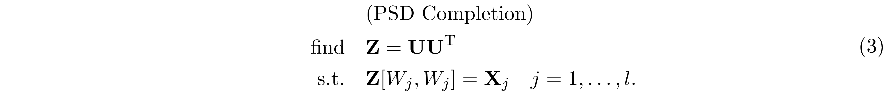Figure 1 illustrate the process of solving SDP through the clique tree conversion 2 following by the positive semidefinite completion 3
The clique tree conversion can be vectorizes into the standard form of linear conic program
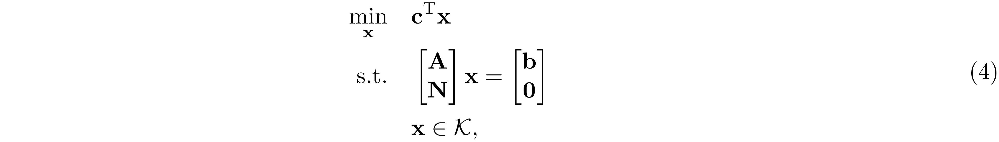where $\mathcal K=\mathrm{S^{|W_1|}_+}\times,\ldots,\times, \mathrm{S_+}^{|\mathrm W_l|}$. Let $f(n)=n(n+1)/2$ be a function outputs the number of elements in the lower triangular part of $n\times n$ matrix. $\text{svec}({\bf A})\in\mathbb R^{f(n)}$ be the weighted vectorization of the lower triangular part of $n\times n$ matrix ${\bf A}$ such that $\text{svec}({\bf A})^\mathrm{T}\text{svec}({\bf B})={\bf A}\bullet{\bf B}$. Then ${\bf c},{\bf x}\in\mathbb R^{n'}$, ${\bf A}\in\mathbb R^{m\times n'}$, $n'=\sum_{j=1}^lf(|W_j|)$ is given by
In addition ${\bf N}\in\mathbb R^{m'\times n'}$ is a block matrix, where $m'=\sum_{i=1}^lf(|W_i\cap W_{p(i)}|)$ and $p(i)$ is the parent of vertex $i$ in the clique tree. ${\bf N}$ and its blocks ${\bf N}_{i,j}\in\mathbb R^{f(|W_i\cap W_{p(i)}|)\times f(|W_j|)}$ are defined as
The constraint $\sum_{j=1}^l{\bf A}_{ij}\bullet{\bf X}_j=b_i$ is said to be partially separable if and only if there exists some ${\bf A}_i'$ and $i'\in\{1,\ldots,l\}$ such that
When SDP is partially separable, the blocks of matrix ${\bf A}$ in 4 becomes
Zhang et al. 1 proposed to exploit sparsity structure of ${\bf H}$ using the dualizing technique of Lofberg 9. The dual of 4 is given by
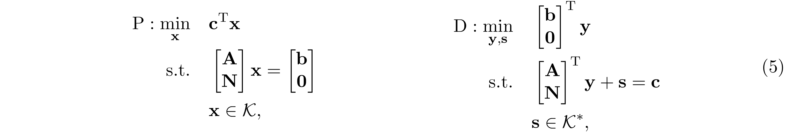where $\mathcal K^*=\mathcal K$ is the dual cone of $\mathcal K$. The dualization technique of Lofberg 9 swap the role played by primal and dual problem
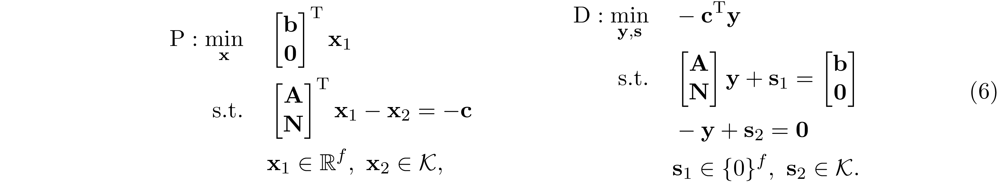where $f=m+m'$ is the number of equality constraint. Observe that the dual problem of 6 is exactly the same as the primal problem in 5. Applying the IPM to solve 6. The normal equation we need to solve at each iteration takes the form
where ${\bf D}_s$ is a block diagonal matrix such that ${\bf D}_s=\text{diag}({\bf D}_{s1},\ldots,{\bf D}_{sl})$, ${\bf D}_{si}\in\mathbb R^{f(|W_i|)\times f(|W_i|)}$ and ${\bf D}_{s,i}\succeq 0$. ${\bf D}_f$ is low-rank perturbation such that ${\bf D}_f=\sigma{\bf I}+{\bf w}{\bf w}^\mathrm{T}$. Let
and apply Sherman-Morrison-Woodbury, we have
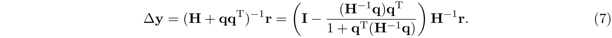The block sparsity pattern of ${\bf N}^\mathrm{T}{\bf N}$ coincides with the tree graph $\mathrm{G(W,T)}$, and ${\bf A}^\mathrm{T}{\bf A}$ is a block diagonal matrix under the partially separable assumption. As a result, the block sparsity pattern of ${\bf H}$ is chordal. Example 1 gives a concrete example.
Observe that evaluating ${\bf H}^{-1}{\bf q}$ is the same as solving ${\bf q}'$ such that ${\bf H}{\bf q}'={\bf q}$. ${\bf q}'$ can be solved by first factorizing ${\bf H}={\bf L}{\bf L}^\mathrm{T}$, and then solve ${\bf L}{\bf b}={\bf q}$ following by ${\bf L}^\mathrm{T}{\bf q}'={\bf b}$. By Lemma 2, ${\bf L}$ has no block fill; therefore, ${\bf L}$ can be factorized in $O(\beta^3n)$ and ${\bf q}'$ can be solved in $O(\beta^2n)$, where $\beta=\max_jf(|W_j|)$. This result allows us to evaluate $\Delta{\bf y}$ in 7 in $O(\omega^6n)$ time, where $\omega=\max_j|W_j|$ and $\beta\leq\omega^2$. As a result, the computational complexity to obtain the $\epsilon$-accuracy solution using IPM is $O(w^6n^{1.5}\log(1/\epsilon))$. Notice that Zhang's method 1 is better than Andersen's method 10 when the number of equality constraints $m$ is large. Specifically, when $m$ is of $O(\omega n)$ then Andersen's method requires $O(\omega^3n^{3.5}\log(1/\epsilon))$ time complexity, which is comparable to the cubic time complexity of direct IPM when the number of constraint $m$ is of $O(n)$.
 Because ${\bf A}$ is in perfect elimination ordering we have $\{(i,j)\mid (1,i)\in\mathrm E,\ (1,j)\in\mathrm E\}\subseteq\mathrm E$, therefore $\mathrm E_1=\mathrm E$ and ${\bf
D}_1\in\mathrm{S_{E}^n}$. Similarly, we can apply the same partition on ${\bf D}_1$ and factor it as ${\bf D}_1=\widetilde{\bf L}_2{\bf D}_2\widetilde{\bf L}^\mathrm{T}_2$ where
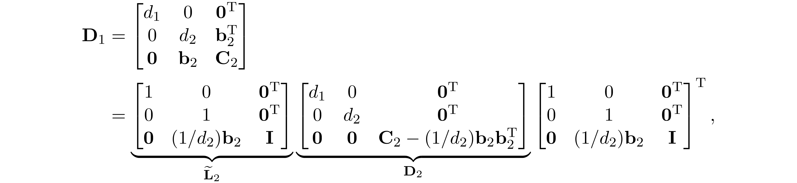
and let ${\bf L}_2={\bf L}_1\widetilde{\bf L}_2$, we have
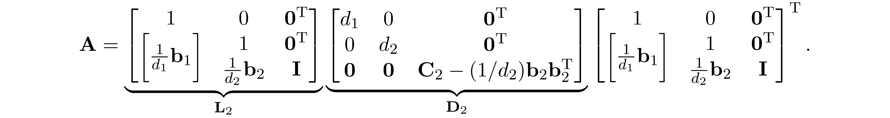
Let $\mathrm{E_2}$ be the sparsity pattern of ${\bf D}_2$, becasue ${\bf A}$ is in perfect elimination ordering we have
Repeating this procedure $n$ times, we have ${\bf A}={\bf L}_n{\bf D}_n{\bf L}_n^\mathrm T$, where
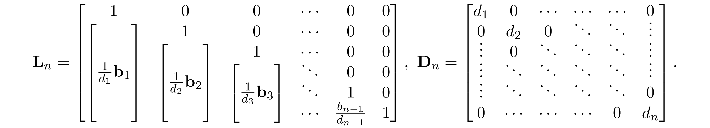
Because ${\bf A}$ is in perfect elimination ordering we have $\mathrm E_n =\mathrm E_{n-1} = \ldots = \mathrm E_1= \mathrm E$. Since ${\bf D}_n$ is diagonal and ${\bf L}={\bf L}_n{\bf D}_n^{\frac{1}{2}}$, we
conclude that ${\bf L}+{\bf L}^\mathrm T\in\mathrm{S^n_E}$; therefore, the Cholesky factor ${\bf L}$ has no fill-in.
Because ${\bf A}$ is in perfect elimination ordering we have $\{(i,j)\mid (1,i)\in\mathrm E,\ (1,j)\in\mathrm E\}\subseteq\mathrm E$, therefore $\mathrm E_1=\mathrm E$ and ${\bf
D}_1\in\mathrm{S_{E}^n}$. Similarly, we can apply the same partition on ${\bf D}_1$ and factor it as ${\bf D}_1=\widetilde{\bf L}_2{\bf D}_2\widetilde{\bf L}^\mathrm{T}_2$ where
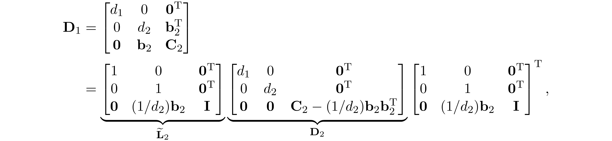
and let ${\bf L}_2={\bf L}_1\widetilde{\bf L}_2$, we have
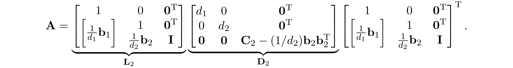
Let $\mathrm{E_2}$ be the sparsity pattern of ${\bf D}_2$, becasue ${\bf A}$ is in perfect elimination ordering we have
Repeating this procedure $n$ times, we have ${\bf A}={\bf L}_n{\bf D}_n{\bf L}_n^\mathrm T$, where
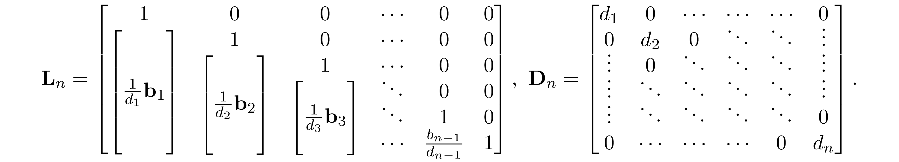
Because ${\bf A}$ is in perfect elimination ordering we have $\mathrm E_n =\mathrm E_{n-1} = \ldots = \mathrm E_1= \mathrm E$. Since ${\bf D}_n$ is diagonal and ${\bf L}={\bf L}_n{\bf D}_n^{\frac{1}{2}}$, we
conclude that ${\bf L}+{\bf L}^\mathrm T\in\mathrm{S^n_E}$; therefore, the Cholesky factor ${\bf L}$ has no fill-in.